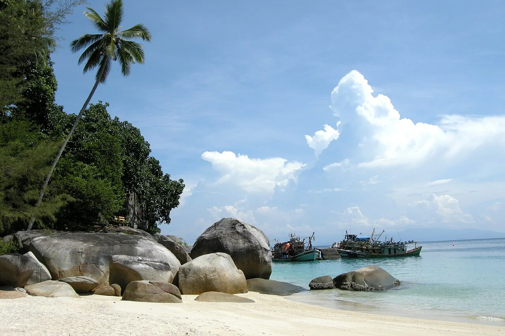
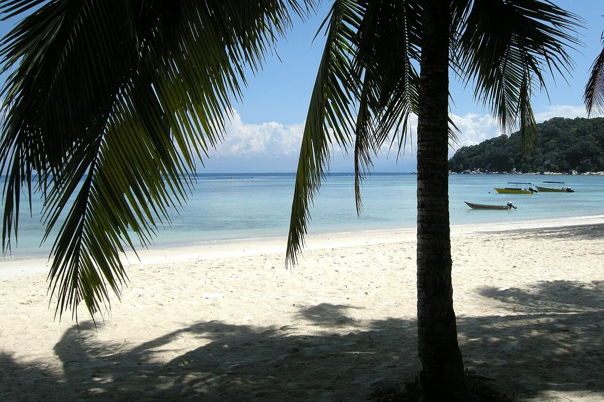

Family Room
A dedicated path for families to compare space, cooling options and stay requirements.
Perhentian Besar · slow island days
Explore room types, packages, activities and the journey from Kuala Besut before starting a direct enquiry.
This concept uses public information from the existing website. Room availability, rates, transfers, packages and facilities remain subject to Mama's Chalet's confirmation.

Stay your way
A responsive site can turn the current room, package and travel information into a simpler planning journey for mobile visitors.
A dedicated path for families to compare space, cooling options and stay requirements.
Make the view, room features and enquiry steps easy to understand at a glance.
Present a quieter garden setting with clear room and occupancy details.
Give value-focused travellers a straightforward comparison point.
Bring stay packages and island activities into the same mobile-friendly journey.
Help guests understand dining, shared spaces and practical facilities before arrival.

A village-style island stay
The existing site describes Malay wooden houses, a seaside setting and village surroundings. A clearer mobile experience can preserve that character while making rooms, transport and contact details easier to navigate.
“From Kuala Besut to the island, every next step should feel clear.”
Plan the journey
The current website states that Perhentian Besar is about 35–40 minutes from Kuala Besut Jetty. A production site could guide the complete trip without hiding important confirmations.
Share an arrival and departure range.
Match room type to the size of the group.
Review the Kuala Besut connection and timing.
Use the public Gmail or WhatsApp contact.
Start your island plan
This form is an interaction demo only. It does not send or store any information.